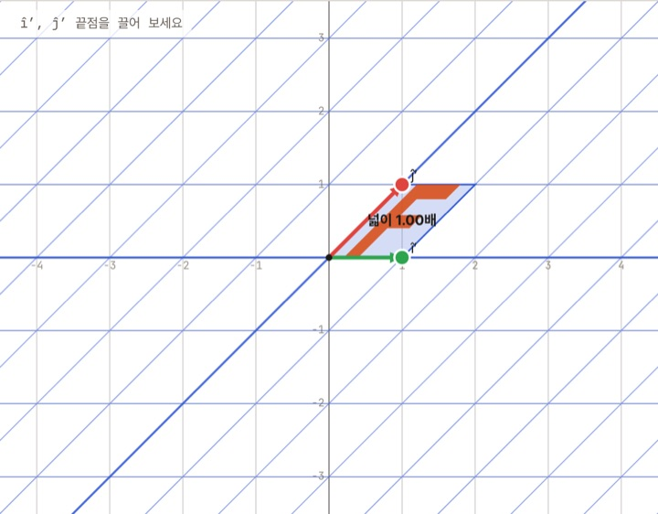
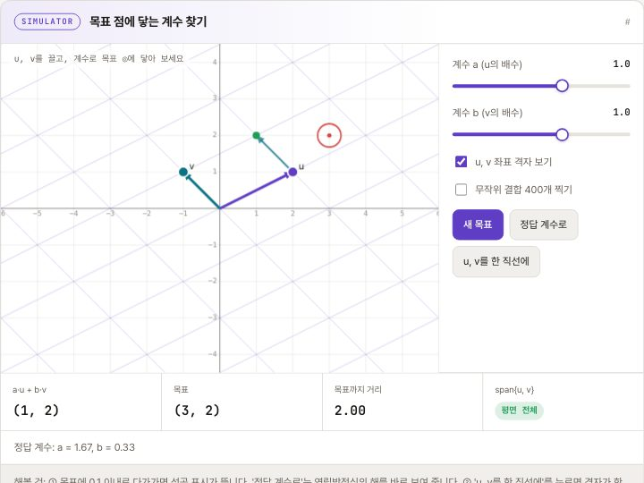
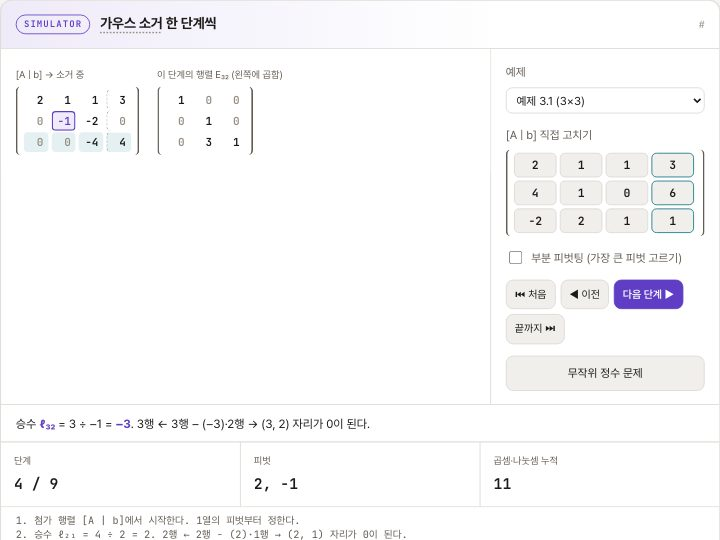
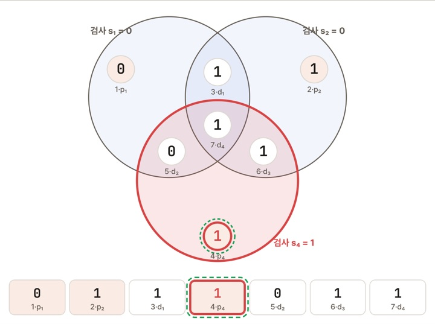

공학 수학을 한 바퀴
문제에서 출발해 복소수·선형대수·푸리에를 차례로 만납니다.
격자를 휘고, 동전을 수천 번 던지고, 방정식을 한 단계씩 소거해 봅니다. 공학 수학 입문 MathBook, 선형대수 LinearBook, 확률과 통계가 함께 꽂힌 수학 서가입니다. 미적분·미분방정식·수치해석 교과서도 준비하고 있습니다.
1권 공개공학 수학 · 선형대수 · 확률과 통계
조건에 맞는 책이 없습니다. 다른 검색어나 분야를 선택해 보세요.
질문 하나를 골라 시뮬레이터를 움직여 보세요. 각 실험은 해당 교과서의 그 장면으로 바로 이어집니다.

MathBook · 공학 수학행렬은 공간을 어떻게 휠까?기저 벡터를 끌면 격자 전체가 따라 휩니다. 행렬식은 넓이 배율입니다.직접 끌어 보기 →
LinearBook · 선형대수두 벡터로 평면의 어디까지 갈 수 있을까?계수를 바꿔 목표 점에 닿아 보고, 두 벡터를 한 직선에 놓으면 생성이 어떻게 줄어드는지 봅니다.직접 끌어 보기 →
LinearBook · 선형대수컴퓨터는 연립방정식을 어떻게 풀까?가우스 소거를 한 단계씩 넘기며 피벗과 승수, 기본 행렬을 확인합니다.직접 끌어 보기 →
MathBook · 공학 수학비트 하나가 뒤집혀도 고칠 수 있을까?아무 비트나 뒤집으면 해밍 부호의 신드롬이 오류 위치를 가리킵니다.직접 끌어 보기 →처음이라면 MathBook으로 큰 그림을 보고, 전공 과목은 각 교과서의 1장부터 차례로 읽으세요.
문제에서 출발해 복소수·선형대수·푸리에를 차례로 만납니다.
벡터와 행렬에서 소거와 LU 분해까지, 연립방정식을 푸는 법을 세웁니다.
확률의 기초에서 추정과 검정, 회귀로 이어집니다.